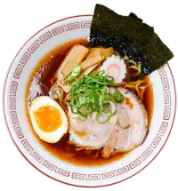
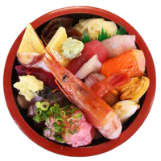

Hiyayakko (Japanese Chilled Tofu)
Hiyayakko is a traditional Japanese dish of chilled tofu
topped with various condiments. It is a refreshing and
light appetizer that can be enjoyed in summer or any time
of the year. The tofu is usually served with soy sauce,
grated ginger, green onions, bonito flakes and sesame
seeds, but you can also customize it with your favorite
toppings.

Hamamatsu Gyoza
It is a type of pan-fried dumpling filled with minced pork
and cabbage, served with a soy-vinegar dipping sauce. The
distinctive feature of Hamamatsu Gyoza is that the
dumplings are arranged in a circular pattern and fried
together, forming a crispy crust on the bottom. Hamamatsu
Gyoza is a popular snack or appetizer that can be enjoyed
with beer or sake.

Black Tofu Ramen
A hearty and satisfying dish, our black tofu ramen
features chewy noodles in a rich broth made with soy
sauce, garlic, and black sesame paste. Topped with crispy
fried tofu, scallions, and nori, this vegan-friendly ramen
will warm you up on a cold day.

Kaisendon (Seafood Rice Bowl)
Kaisendon is a Japanese dish that consists of fresh
seafood, such as tuna, salmon, shrimp, and scallops,
served over a bowl of rice. It is a simple but delicious
way to enjoy the flavors of the ocean. Kaisendon is often
accompanied by soy sauce, wasabi, and ginger for dipping.
Matcha Pudding
Matcha pudding is a creamy custard dessert infused with
matcha green tea powder. It has a smooth texture and a
rich flavor with a hint of bitterness. Matcha pudding is
often topped with whipped cream and red bean paste for a
sweet contrast. Enjoy this easy and delicious treat as a
refreshing snack or a satisfying dessert.
Matcha Latte
Enjoy a refreshing and energizing drink made with
high-quality matcha powder and steamed milk. Matcha is a
finely ground green tea that has a rich flavor and many
health benefits. Our matcha latte is lightly sweetened and
can be served hot or iced.